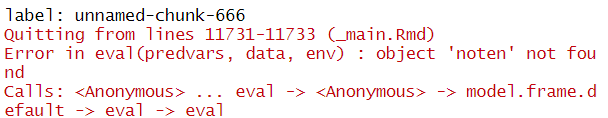
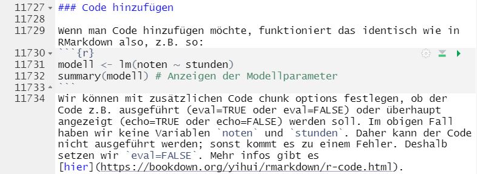

modell <- lm(noten ~ stunden)
summary(modell) # Anzeigen der Modellparameter30 Zur R-Lernplattform Beitragen
Dieses Repository enthält alle Dateien, die für die Erstellung der R-Lernplattform notwendig sind. Die Webseite ist als Quarto Book Projekt angelegt und kann beliebig erweitert und überarbeitet werden.
30.1 Was finde ich im Projekt?
Die wichtigsten Dokumente sind die Quarto Markdown Dateien. Diese enden mit .qmd und in ihnen sind die tatsächlichen Inhalte der Website gespeichert. Beispielsweise findest Du in “Installation.qmd” die Infos zur Installation von R und RStudio. Im Dokument “Einfuehrung_in_R.qmd” befindet sich
dann die Einführung in R.
Wichtig: Die .qmd - Dateien landen nicht automatisch auf der Webseite! Damit das Thema, das in der .qmd Datei behandelt wird, auch auf der Webseite landet, müssen wir erst die _quarto.yml Datei öffnen. Dort finden wir beispielsweise folgende Auflistung:
book:
title: "R Lernplattform"
author: "Methods Group Berlin"
chapters:
- part: "R und RStudio"
chapters:
- index.qmd
- Installation.qmd
- Einfuehrung_in_R.qmd
- Einfuehrung_in_RStudio.qmd
- Pakete.qmd
- Daten-importieren.qmd
- Fehlermeldungen.qmd
- Datenvorbereitung.qmd
- Fehlende-Werte.qmd
- Wide-and-Long-Format.qmd
- Grafiken.qmd
- Markdown.qmd
- part: "Spezifische Themen"
chapters:
- Voraussetzungspruefung.qmd
- Outputs-ALM-FAQ.qmd
- Git.qmd
- part: "Projekt-Dokumentation"
chapters:
- Interne-Dokumentation.qmd
- lineare-regression.qmdJede qmd - Datei, die nachher tatsächlich auf der Webseite erscheinen soll, muss hier aufgeführt werden. Achtung: Die Einrückungen sind hier sehr wichtig, sonst funktioniert das Dokument nicht. Mehr Infos gibt es hier.
Im Ordner “figures” befinden sich alle Bilder, die in der Webseite eingebunden sind. Beispielsweise befinden sich im Unterornder Daten-importieren/Bilder alle Bilder des Themas Daten importieren.
Im Ordner “data” befinden sich alle Datensätze, die zur Erstellung der Webseite notwendig sind. Diese werden in den Beispiel-Analysen verwendet (z.B. um das Einlesen von Datensätzen zu veanschaulichen).
Die restlichen Dateien sind notwendig für Quarto. Den größten Teil hiervon können wir ignorieren. Für uns (manchmal) relevant sind hier eigentlich nur “style.scss” und “DESCRIPTION”. In “style.scss” wird das Aussehen der Webseite definiert. Diese Datei ist aktuell einfach von der alten Webseite übernommen, was dazu führt, dass der bisherige Stil beibehalten wird. In “DESCRIPTION” geben wir (unter anderem) an, welche R Pakete wir in den einzelnen .qmd Dateien nutzen. Wenn wir beispielsweise lavaan nutzen wollen, müssen wir hier lavaan zu den Paketen hinzufügen (siehe unten). Wenn wir das vergessen, kommt es zu Fehlern beim erstellen der Webseite!
30.2 Themen bearbeiten
Themen können entweder direkt auf GitHub bearbeitet werden oder lokal auf dem eigenen Rechner. Wenn Du Themen auf Deinem Rechner bearbeiten möchtest, musst Du Dich mit git und GitHub auskennen. Im Folgenden werden wir uns auf die Bearbeitung direkt in GitHub konzentrieren.
Angenommen Dir fällt ein Fehler in der Einführung in R auf. Um den Fehler zu beheben, öffne das Dokument “Einfuehrung_in_R.qmd” in GitHub.

Anschließend kannst Du die Datei bearbeiten, indem Du auf den Stift klickst:

Du kannst nun das Dokument verändern. Wenn Du alle Veränderungen vorgenommen hast, dann klicke auf commit (scrolle nach ganz unten).

Wichtig: Nur was auf dem “main” Branch gespeichert ist, wird tastächlich auf der Webseite zu sehen sein. Damit nicht alles direkt auf der Webseite landet, dürfen wir nicht direkt den main - Branch verändern. Tatsächlich erlaubt uns GitHub das auch gar nicht. Stattdessen wird uns hier vorgeschlagen, einen neuen Branch zu erstellen (jhorzek-patch-2). Wir können dem Branch auch einen passenderen Namen geben (z.B. fix-typo, wenn wir einen typo korrigieren). Dann drücken wir auf “Propose changes”. Wir können auf dem neu erstellten Branch jhorzek-patch-2 auch weitere Veränderungen vornehmen.
Wenn wir mit unseren Veränderungen fertig sind, wollen wir diese auf die Webseite übernehmen. Dafür erstellen wir einen sogenannten Pull Request.
Diesen können wir nun mir “Merge pull request” in den main branch übernehmen:
Wichtig: Bei größeren Veränderungen solltest Du auf Feedback von anderen im Projekt warten und nicht direkt mergen!
Wenn der merge durchgeführt wurde, wird die Webseite neu erstellt.
30.2.1 Code hinzufügen
Wenn man Code hinzufügen möchte, funktioniert das identisch wie in RMarkdown also, z.B. so:
Wir können mit zusätzlichen Code chunk options festlegen, ob der Code z.B. ausgeführt (eval=TRUE oder eval=FALSE) oder überhaupt angezeigt (echo=TRUE oder echo=FALSE) werden soll. Im obigen Fall haben wir keine Variablen noten und stunden. Daher kann der Code nicht ausgeführt werden; sonst kommt es zu einem Fehler. Deshalb setzen wir eval=FALSE. Mehr infos gibt es hier.
30.2.2 Daten hinzufügen
Wenn Du einen Datensatz für Deine RMarkdown-Datei brauchst, der nicht in R oder einem Paket enthalten ist, dann speichere diesen im Ordner “data”. Anschließend kannst Du ihn folgendermaßen in Deiner RMarkdown Datei einlesen:
mein_datensatz <- read.csv("data/mein_datensatz.csv")30.2.3 Bilder hinzufügen
Wenn Du Bilder für Deine RMarkdown-Datei brauchst, dann speichere diese im Ordner “figures”. Anschließend kannst Du diese beispielsweise folgendermaßen nutzen:
Eventuell musst du auch hierfür auch einen neuen Ordner erstellen (hier: den Ordner mein_thema). Wenn Du diesen online in GitHub erstellen willst, dann musst Du aktuell folgendermaßen vorgehen:
- Gehe auf “create new file” oben rechts:

- Schreibe den Pfad “mein_thema” in den Dateinamen:

- Füge eine backslash “/” hinzu. Dann wird GitHub einen Ordner erstellen:

- Weil GitHub uns nicht erlaubt, einfach nur den Ordner zu commiten, müssen wir zudem eine neue Datei erstellen. Am besten schreibt man dafür einfach irgendwas in den File, den Github schon aufmacht. Ich nenne diese beispielsweise einfach temp.txt:

Anschließend können wir auf Commit klicken und haben nun einen neuen Ordner. Unsere Bilder können wir über “Upload files” einfach von unserem PC hochladen. Oder per Drag & Drop einfügen.

30.2.4 Links hinzufügen
Wenn Du intern auf ein anderes Thema referenzieren möchtest, kannst Du einen Link einfügen. Dies geht mit:
[text, den die Leser:innen sehen](Name_der_qmd_Datei.qmd)Beispielsweise führt folgender Link zur Einführung in R. Als Rohtext steht hier:
Beispielsweise führt folgender Link zur [Einführung in R](Einfuehrung_in_R.qmd).Für Links zu Subkapitel, können wir einen Hashtag nutzen: [about](about.qmd#section)
30.2.5 Paket hinzufügen
Wenn Dein neues Thema auch ein neues R-Paket benötigt, führe folgende Schritte aus:
- Lade die aktuelle Version des Projektes von GitHub herunter
- Führe
renv::restore()durch, um die aktuell verwendeten Paket-Versionen zu installieren - Füge Dein neues Thema mit dem neuen R-Pakte hinzu
- Füge Dein R-Paket im Dokument
DESCRIPTIONzuImports:hinzu (so wie beispielsweise dplyr). - Führe
renv::snapshot()durch, um die Version Deines neu hinzugefügten R-Pakets festzuhalten - Lade Dein aktualisiertes Projekt auf GitHub hoch und erstelle einen Pull-Request
30.3 Neues Thema erstellen
Es gibt mehrere Wege, ein neues Thema zu erstellen. Wir können, wie oben beschrieben, eine neue Datei direkt in GitHub erstellen.
Dieser können wir nun beispielsweise den Namen “Mein-neues-Thema.qmd” geben und sie direkt in GitHub bearbeiten. Wenn wir dies tun, können wir aber den R Code nicht ausführen; das geschieht erst, wenn die Webseite erstellt wird.
Ein einfacherer Web ist folgender:
- Wir erstellen auf unserem Computer in RStudio eine neue Quarto Datei und nennen diese “Mein-neues-Thema.qmd”.
- Wir entfernen den gesamten Inhalt der Datei und fangen direkt mit einer Überschrift an (wichtig: es muss eine Überschrift mit nur einem Hashtag sein; siehe beispielsweise Zeile 1 in https://github.com/Methods-Berlin/RLernplattform/blob/main/Pakete.qmd).
- Jetzt können wir wie gewohnt unsere Inhalte in die Quarto Datei schreiben und den Code auch lokal laufen lassen.
Wenn wir fertig mit dem Erstellen der neuen Datei sind, können wir sie direkt auf GitHub hochladen:
Unser neues Thema wurde nun hinzugefügt!
30.4 Fehler beheben
Es kommt immer wieder vor, dass beim erstellen der Webseite Fehler auftreten. Diese sehen in RStudio beispielsweise so aus:

Wir sehen hier auf der rechten Seite den Hinweis:

Dieser Fehler sagt uns, dass wir im Dokument _main.Rmd in Zeile 11731-11733 nach einem Fehler ausschau halten müssen. Noch spezifischer sagt uns der Fehler, dass es das Objekt “noten” nicht gibt. Wenn wir das Dokument _main.Rmd öffnen, finden wir dort in den angegebenen Zeilen:  Dieser Teil des Dokuments _main.Rmd kommt aus dem Dokument 15-Interne-Dokumentation.Rmd. Schauen wir dort noch mal genauer nach, dann sehen wir, dass die Variablen noten und stunden gar nicht erstellt wurden und deshalb der Code nicht funktionieren kann. Wir können das Problem lösen, indem wir eval=FALSE hinzufügen.
30.5 renv
Mit renv können die Paktete (dependencies) des R Projekte verwaltet werden. Wenn das R Projekt geöffnet wird und renv installiert wurde werden die Pakete automatisch in der richtigen Version geladen. So wird sichergestellt, dass alle mit der gleichen Umgebung arbeiten, andernfalls kann es passieren, dass der Code im Projekt nicht funktioniert wird, weil sich das Verhalten der verschiedenen Versionen der verwendeten Pakete ändert.
Um renv zu nutzen, muss man das Paket einmalig lokal installieren mit install.packages(renv). Beim ersten Öffnen muss man dann renv::restore() verwenden, um die Pakete auf den aktuellen Stand zu bringen. Wenn das Projekt beim nächsten Mal geöffnet wird, werden automatisch die korrekten Versionen verwendet.
Die Dokumentation und eine allgemeine Einführung zu renv findet ihr hier.
Die RLernplattform aktualisiert die Paketversionen automatisch und testet, ob die Plattform auch mit den neuesten Versionen erstellt werden kann. Wenn Du das Projekt bei Dir lokal installiert hast, solltest Du daher ab und an die neueste Version von GitHub herunterladen und renv::restore() durchführen.
30.6 Projekt lokal bearbeiten
Bei größeren Veränderungen ist es sehr viel einfacher, diese auf dem eigenen Rechner vorzunehmen. Hierfür kannst Du das Programm GitHub desktop auf Deinem Rechner installieren. Logge Dich dort mit deinem GitHub account ein. Öffne anschließend die GitHub - Seite der RLernplattform im Browser und wähle Code > Open with GitHub Desktop aus.
Hinweis: Hierfür muss GitHub Desktop geöffnet sein. GitHub Desktop wird Dich nun fragen, wo das Projekt gespeichert werden soll. Wähle einen passenden Ordner aus. Im Ordner wirst Du alle Dateien des Projektes finden, inklusive der RLernplattform.Rproj Datei. Öffne diese mit RStudio. renv wird Dir dabei helfen, die notwendigen Pakete zu installieren. Anschließend kannst Du alle Dateien bearbeiten und die Webseite lokal bei Dir mit Render Book > HTML format erstellen.
Commite Deine Veränderungen auf einen neuen branch. Das geht direkt in RStudio im Reiter Git:
Klicke alle Dateien an und wähle “Commit”.
Schreibe eine commit - message, die erklärt, welche Veränderungen Du vogenommen hast. Drücke dann auf “Commit” und anschießend auif “Push”.
Deine Veränderungen wurden nun auf GitHub hochgeladen und Du kannst dort wie gewohnt einen merge request erstellen.
30.7 GitHub Actions
Die Webseite wird automatisch von GitHub erstellt. Hierfür verwenden wir GitHub actions, die im Ordner .github/workflows definiert sind. Die wichtigsten actions sind folgende:
- create_website holt die aktuelle Version der .qmd - Dateien vom main branch und erstellt basierend auf diesen die Webseite. Dies geschieht in zwei Schritte:
- Der Schritt “update-docker-image” schaut, ob sich die Versionen der R-Pakete verändert haben oder neue Pakete hinzugekommen sind. Ist dies der Fall, dann wird ein neuer Schnappschuss dieser Pakete erstellt und gespeichert. Dieser Schnappschuss kann dann anschließend genutzt werden, um die Webseite zu erstellen. Der Grund für diesen Schritt ist, dass nur relativ selten neue Pakete zur Plattform hinzukommen. Daher können wir meist einen Schnappschuss erstellen und diesen mehrere Monate lang nutzen, was das Erstellen der Webseite extrem viel schneller macht.
- Der Schritt “bookdown” erstellt die Webseite. Hierfür wird der Schnappschuss der Pakete aus Schritt 1 genutzt. Die Webseite wird dann automatisch hochgeladen.
- check_website funktioniert ähnlich wie create_website und wird jedes mal ausgeführt, wenn ein pull-request erstellt wird. check_website überpüft, ob die Veränderungen in Projekt dazu geführt haben, dass die Webseite nicht mehr erstellt werden kann.
- initialize_docker_dependencies erstellt alle zwei Monate einen neuen Schnappschuss der im Projekt verwendeten Pakete. Dieser Schritt wird durchgeführt, um die neuesten Versionen von R, git, etc zu installieren. Wenn es beim Erstellen der Webseite zu Problemen kommt, kann es sinnvoll sein, den Schnappschuss zu erneuern. Gehe hierfür im Projekt auf Actions und wähle links initialize docker image aus. Klicke dann auf “Run workflow”. Der Schnappschuss der Pakete wird nun neu erstellt.
- update-renv ist eine wöchentlich durchgeführte action, die renv und alle Pakete im Projekt auf Updates überprüft. Falls es updates gibt, wird ein pull-request erstellt.